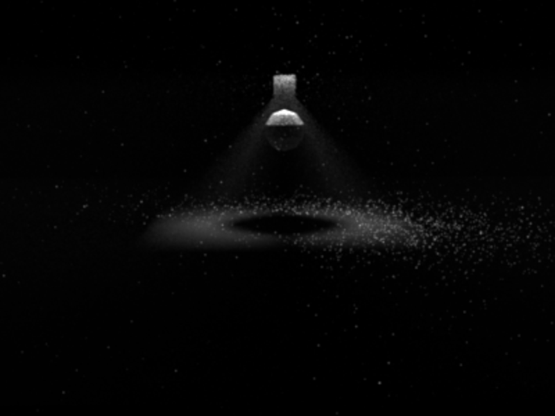

**Final Project Report**
Student name: Vishal Pani
Sciper number: 335625
Late Days Remaining: 2 0
Final render(s)
============
My render is called "Midnight Snack". The loop is basically the chocolate glacing on top of the donut icing, which also acts as the road for the car. With this image, I wanted to portray that sudden craving for sweet snacks that I sometimes have during the late-night hours.
Making the donut float is just a way to emphasize my craving :P!
For the final render, I could not decide between the above two images. The non-fog (left) image is cleaner than the image with thin fog. However, the image with thin-fog gives a better "midnight" aesthetic.
Motivation
==========
For this render I was motivated by different sources. For the loop aspect of the project I wanted to incorporate the road from King Kai’s planet from an anime called Dragon Ball Z. Also, as this is my first rigorous graphics course I wanted to somehow pay homage to contemporary animated films. So I decided to incorporate an aspect of the pixar lamp and the vibrant color schemes used by such movies.
Feature list
============
Feature
Standard point count
Adjusted point count
Depth of Field
10
10
Texture
10
10
Mesh design
10
10
Image Based Lighting
30
25
Homogenous Participating Media
30
25
Total
90
80
Depth of Field (10 pts)
=========
Implementing Depth of Field (DoF) significantly increases the realism of a given scene. I implemented DoF following the theory mentioned in PBRv3 Ch. 6.2.
Since, I just had to add two extra parameters (focal distance and aperture) to the perspective camera, I implemented it on top of src/perspective.cpp. If we don't pass these parameters while initializing the perspective camera in the scene parameters, the camera will not produce any DoF.
To validate my implemetation I created a simple scene in Blender with 4 cubes. The distances of these cubes from the camera is shown below (the distances are measured using the Measure tool in Blender).
Here, I focus on the first and last cube from the right by setting the focal distance as measured with Blender. The aperture is set to 2.
Mesh Design (10 pts)
=========
I wanted to design the subject of my scene myself. Since I had limited Blender knowledge, I followed Blender Guru's tutorial until the 10th video. It covered the basics of Blender and looked over some advanced concepts like Blender Nodes. Blender Nodes was used to design the sprinkles.
Also, I added the road (which is the loop of my scene) which resembles chocolate glacing.
To add a bit of character to my scene, I also designed some cream smudges, that indicates that someone wasn't patient enough and wanted to taste the icing ASAP :P. I followed Sonny Nguyen's tutorial on YouTube to model this.
Textures (10 pts)
=========
Textures, are quite prominent in my final scene. I have implemented image textures for this project. The main task was to implement the uv_mapping() function that correctly maps the uv coordinate of the image texture to the current intersection.
Also, the image of the texture is in sRGB space and need to be converted to linearRGB space, or else the render produces flat colours for the texture.
The nice thing about image textures is that they validate themselves. They just need to map correctly! For some examples, here are the textures that I used for the donut which were produced using Blender:
Image Texture for the donut base.Image Texture for the icing.Rendering of the texture-mapped donut.
Image Based Lighting (25 pts)
=========
Image Based Lighting (IBL) adds a lot of realism to a scene, however, it is not significant in my scene. The implementation can be found in src/env_light.cpp. For the image probe, I use .exr images as input.
To sample the probe efficiently, I implemented Hierarchical Sample Warping as instructed in the hacker point section of assignment 3. Now, to get the functions of the environment lights working properly, I follow the theory mentioned in PBRv3.
To validate Hierarchical Sample Warping, first, I created several 4x4 images with random values and used warptest for the validation.
However, when using an actual light probe (here, uffizi-large, size: 1024x1024) the test fails, even though the expected probability densities and produced probability densities look quite similar.
Also, note that the image is rotated in warptest but that should not cause any issue in evaluating the densities.
The following is a scene focusing on a dielectric sphere with IBL using the volumetric integrator (without the thin fog medium) and using the Uffizi-large light probe. Also, the fov of the camera is set to 90 (hence, the curved pillars).
Homogenous Participating Media (25 pts)
=========
Finally, I have also implemented Homogeneous Participating Media to simulate thin fog which is spread throughout the scene. I hoped this would convey a foggy night aesthetic to my scene. As for the volumetric integrator,
I closely followed PBRv3's implemetation of VolPathIntegrator, the code is present in src/volintegrator.cpp. For the phase function, I implemented Henyey-Greenstein phase function as mentioned in PBR.
The classes handling the medium, and medium interface are implemented in include/nori/medium.h and src/homogenous.cpp. The medium is parametrized with the absorption (sigma_a) and scattering factor (sigma_s) respectively. It is also parametrized by the asymmetry factor g, which is passed to the Henyey-Greenstein phase function.
My current implementation only handles a thin fog present in the entire scene. But I feel have implemented all the necessary components to extend it multiple media easily.
To validate my implementation I have set up a simple scene containing a low-poly sphere, and a light source on top of it.
For the base case, sigma_a = sigma_s = 0.01 and g = 0 (isotropic medium). All the images are rendered at 400x300.
On decreasing sigma_s to 0.001 we see that the "god rays" are less visibible, as the scattering capability of the medium has decreased.
Next we decrease sigma_a to 0.001 from the base case. We see that the image is more brighter, as the medium absorbs lesser.

Also, in the final scene, we can see that adding thing fog to the scene, produces god rays from the lamp as indicated by the blue lines: